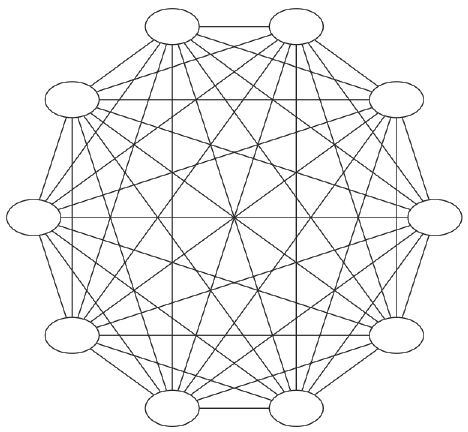
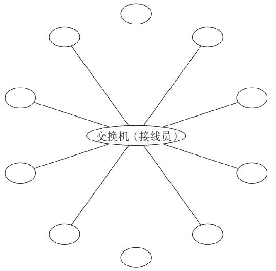
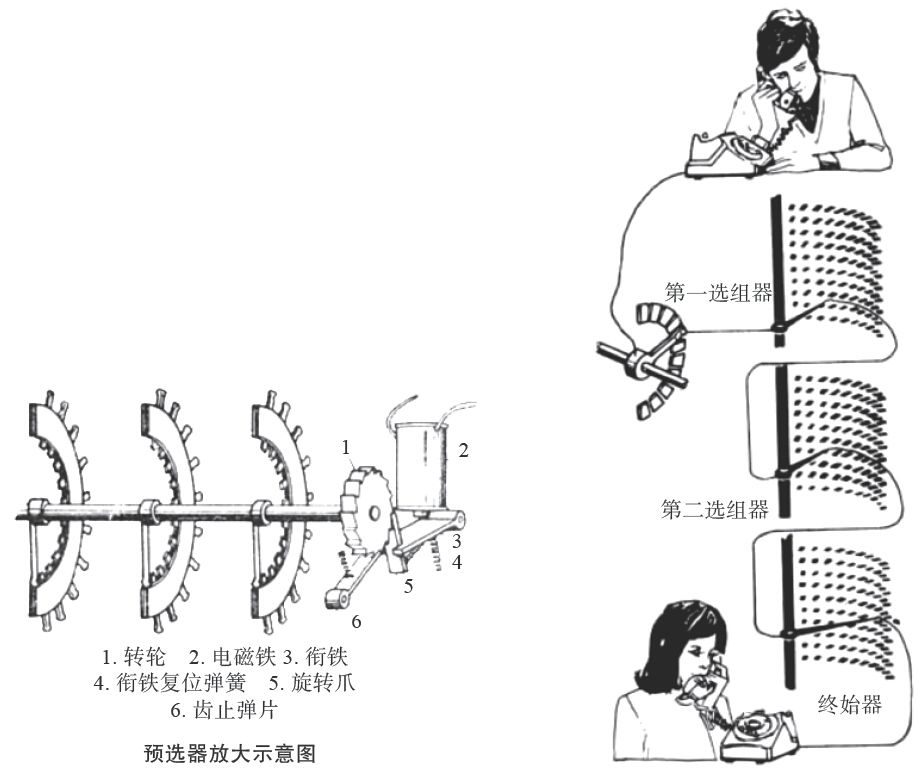
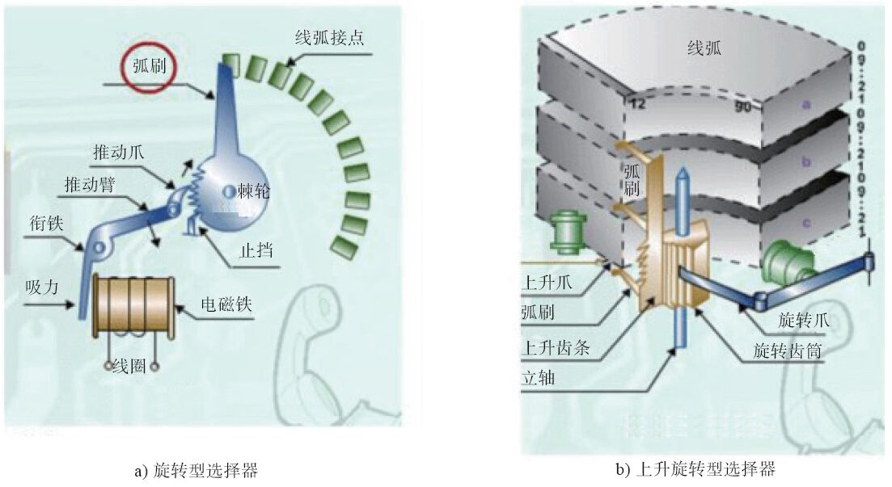
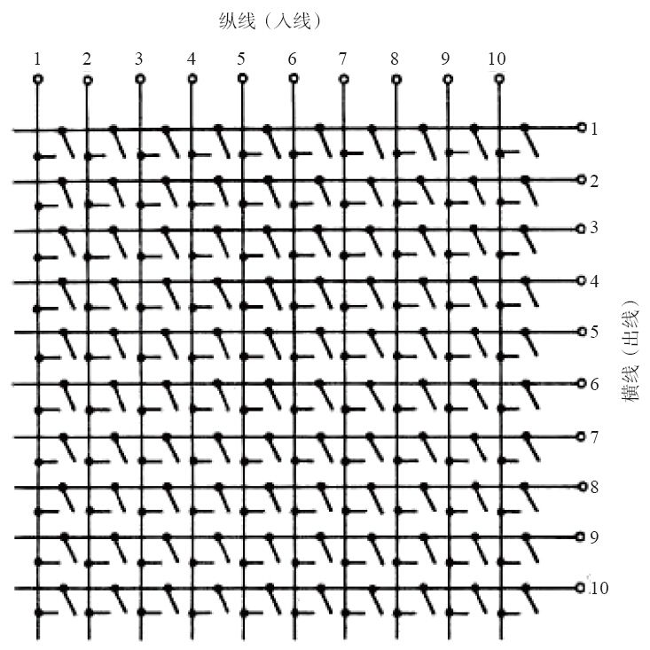

1.1 PSTN起源与发展
在漫长的通信历史长河中，PSTN及电话交换技术的发展经历了很多阶段，如从直接控制到间接控制再到公共控制、从人工交换到自动交换、从电子交换到程控交换、从模拟到数字、从电路交换到分组交换、从“硬”交换到软交换等。下面我们分别介绍。
1.1.1 最早的电话网
第一次语音传输是苏格兰人亚历山大·贝尔（Alexander Granham Bell） [1] 在1876年用振铃电路实现的。而在那之前，普遍认为烽火台是最好的远程通信方式。
用振铃电路实现通话功能的时代是没有电话号码的，相互通话的用户之间必须由物理线路连接；并且，在同一时间只能有一个用户讲话（半双工）。发话方通过话音振动来激励电炭精麦克风从而产生电信号，电信号传到远端后通过振动对方的扬声器发声，从而传到对方的耳朵里。
由于每对通话的个体之间都需要单独的物理线路，如果整个电话网上有10个人，而某人想与另外9个人通话，他就需要铺设9对电话线。同时整个电话网上就需要10×(10–1)/2=45对电话线，如图1-1所示。

图1-1 电话网上有10个人通话的情况
1.1.2 人工电话交换时代
随着时代的发展，对电话有需求的用户越来越多，甚至普通家庭都希望拥有自己的电话。但是，为每对欲通话的家庭之间都铺设电话线是不可能的。因此，一种称为交换机（Switch，又称Exchange）的设备诞生了。它位于整个电话网的中心，用于连接每个用户。用户想打电话时，先拿起电话连接到管理交换机的接线员，由接线员负责接通到对方的线路。这便是最早的电话交换网（见图1-2），交换接续工作全部由人工完成。通过使用交换机，交换网上需要的线路大大减少了。

图1-2 人工电话交换网
1.1.3 自动电话交换时代
1889年到1891年期间，美国阿尔蒙·B·史端乔（Almon B Strowger）发明了步进式自动电话交换机。有趣的是，他发明自动交换机的目的并不是为了把接线员从繁忙的人工交换机上解放下来，而是来源于另外一则故事：他本是一个殡仪馆老板。他发觉每当城里发生死亡事件，用户给“殡仪馆”打电话时，不知接线员是有意还是无意的，总会把电话接到另一家殡仪馆。这使史端乔非常郁闷，发誓要将电话交换自动化。功夫不负有心人，史端乔凭他那过人的聪明和毅力，终于发明了一种步进式的自动电话交换机，并申请了专利。人们为了纪念他，故又称这种电话交换机为“史端乔交换机”（见图1-3）。这种交换机的特点是由用户话机的拨号脉冲直接控制交换机的动作，属于“直接控制”方式。

图1-3 步进式交换机4位拨号电话中继示意图
以后，又出现了旋转式（见图1-4）和升降式的交换机。这类交换机采用了一个称为“记发器”的部件来接收用户的拨号脉冲，然后将其通过译码器译成电码来控制接线器的动作，这属于“间接控制”方式。在采用记发器后，增加了选择的灵活性，从而使交换机的容量得到了提高。
1919年，瑞典的电话工程师帕尔姆格伦和贝塔兰德发明了“纵横制接线器”（见图1-5），并申请专利。这种交换机将过去使用滑动摩擦方式的触点改成了压接触，减少了磨损，从而提高了交换机的寿命；而且，由于采用了导电性好的贵金属（如银）做金属触点，也大大提高了接触的可靠性。这种交换机的另一个特点是把控制部分和话路部分分开。控制部分由标志器和记发器来完成，称为公共控制。公共控制对用户拨号盘要求低，而中继部署的灵活性大大提高。
瑞典和美国分别在1926年和1938年开通了纵横制交换机，接着，法国、日本和英国也相继生产出纵横制交换机。

图1-4 旋转式交换机

图1-5 纵横接线器交叉点示意图
1.1.4 半电子交换机时代
随着电子技术，尤其是半导体技术的迅速发展，人们开始在交换机内引入电子技术，产生了电子交换机。由于当时技术条件的限制，仅在控制部分引入了电子技术，而话路部分在较长的一段时间内仍然采用机械触点。这种交换机一般称为半电子交换机或准电子交换机（区别是后者采用了速度较快的笛簧接线器）。
1.1.5 空分交换机时代
1946年，第一台由存储程序控制的电子计算机诞生，这对现代科学技术起到了划时代的作用。通过在交换机中引入“存储程序控制”的概念，1965年5月，美国贝尔系统的1号电子交换机（ESS No.1）问世了，这是世界上第一部开通使用的程控电话交换机。当时的交换机话路部分还保留了机械触点，以“空分”方式工作，因此称为空分交换机。并且，它交换的还是模拟信号。
1.1.6 数字交换机时代
20世纪60年代初以来，脉冲编码调制（PCM）技术成功地应用于传输系统中，它通过将“模拟”的信号数字化，提高了通话质量、增加了传输距离，同时，节约了许多线路成本。1970年，法国开通了世界上第一部程控数字交换机E10，开始了数字交换的新时代。
1.1.7 现代PSTN时代
随着技术的进步和人们对通信要求的增加，世界上许许多多的交换机间也需要相互通信，这些交换机之间通过中继线（Trunk）相连，随着电子交换机和程控交换机的发展，便出现了现代意义的PSTN网络。PSTN网络把世界上各个角落的人们都联系在了一起，很显然，有时一个通话需要穿越好多台交换机。
20世纪70年代后期出现了蜂窝式移动电话（当移动电话小到可以拿在手里的时候就开始叫“手机”了）系统，这是无线电话发展的里程碑。而在此之前，虽然无线电通信是在1895年发明的，但无线电话却是在20世纪初发明了真空三极管之后才出现的。1915年首次成功地实现了跨越大西洋的无线电话通信；1927年在美国和英国之间开通了商用无线电话。移动电话的出现，扩展了PSTN网络的能力和范围，对PSTN网络的影响极其深远。
专门用于移动电话交换的通信网络称为移动网，而原来的程控交换网则称为固定电话网，简称固网。简单来说，移动网就是在普通固网的基础上增加了许多基站（Base Station，可以简单理解为天线），并增加了归属位置寄存器（Home Location Register，HLR）和拜访位置寄存器（Visitor Location Register，VLR），以记录用户的位置（在哪个天线的覆盖范围内）、支持异地漫游等。移动交换中心称为MSC（Mobile Switch Center）。
1.1.8 下一代网络及VoIP时代
随着分组交换技术的成熟及因特网的发展，人们认识到了将原始的基于电路交换的语音网络与基于分组交换的因特网络进行融合（即语音通信和数据通信相结合）的必要性，因此一个称为NGN（Next Generation Network）的概念被提了出来。NGN是指下一代网络，ETSI [2] 对它的定义是：“NGN是一种规范和部署网络的概念，即通过采用分层、分布和开放业务接口的方式，为业务提供者和运营者提供一种能够逐步演进的策略，实现一个具有快速生成、提供、部署和管理新业务的平台。” [3]
在NGN提出之后，经过数年的研究和探索，人们提出了各种NGN的解决方案，但最终基本上都统一到了IMS（IP Multimedia Subsystem）技术 [4] 。IMS运行于标准的IP网络上，使用一种基于第三方伙伴计划（3GPP）的SIP标准的VoIP实现方式。IMS的目标不仅是在现有网络基础上提供新的业务，它还要能提供在未来的因特网上能够承载的所有的业务。
当然，IMS属于核心交换层的技术，它全部基于IP网络，但在接入层，目前的语音大部分还是基于电路接入的方式接入的，因此，这就要求在一定时间内IMS在接入层要继续兼容电路接入。同时，在无线移动通信领域，随着移动通信技术的成熟及众多智能终端的出现，对高速IP网络的要求也就越来越迫切。最新的3G [5] 、4G [6] 技术就是应此要求而产生的。未来的通信中要完全取消低效的电路传输及电路交换，而全部集中到IP通信上来，也就催生了一个新的无线通信标准LTE [7] 。LTE的定义是长期演进而来的，其为现代的手机及其他移动设备提供了高速的数据通信手段，逐步实现了全IP交换。
关于通信网络的演进，简单来说，在无线方面体现为从GSM/CDMA/UMTS等向LTE发展，在核心网方面则体现为从电路交换向IMS发展。过去几年，围绕LTE语音曾经出现过多种观点、技术和演进路线。由于LTE标准不再支持用于支撑GSM、UMTS和CDMA2000网络下语音传输的电路交换技术，它只能进行全IP网络下的分组交换，因此随着LTE网络的部署，运营商需选择VoLTE [8] 、CSFB [9] 、SVLTE [10] 、OTT [11] 等方法之一解决LTE网络中的语音传输问题。从目前来看，移动网络庞大且复杂，在网络建设初期大部分运营商都选择使用CSFB方式建设网络，这种方式便于快速部署系统。当然，CSFB只是过渡时期的临时解决方案。从长远来看，VoLTE及其他几种方案更符合未来网络的发展方向。据报道，中国移动已于2013年6月发布了VoLTE技术白皮书，并计划于2014年下半年展开大规模商用。未来通信网络将走向何方，让我们拭目以待。
[1] 1847年3月3日－1922年8月2日。1870年贝尔移民到加拿大，一年后到美国。1882年加入美国国籍。参见：https://zh.wikipedia.org/wiki/亚历山大·格拉汉姆·贝尔。
[2] European Telecommunications Standards Institute，即欧洲电信标准化协会，官方网站是http://www.etsi.org。
[3] 原文是：NGN is a concept for defining and deploying networks,which,due to their formal separation into different layers and planes and use of open interfaces,offers service providers and operators a platform which can evolve in a step-by-step mannerto create,deploy and manage innovative services.不过，这个概念的定义跟它的名字一样令人迷惑。事实上，这个概念最早大约是在1997年提出来的，所以，“下一代”中的“下”早就过时了。
[4] 一般来说，NGN就应该称为软交换，而有的人也说IMS是更软的软交换。读者到后面就能了解到，与“更软的软交换”相比，FreeSWITCH更是用纯软件实现的，或许可以称做是“更更软的软交换”了。当然软交换的“软”并不是取决于它是否用“软件”来实现，而是更强调基于分组网的交换网络中的呼叫控制功能与媒体网关的分离。
[5] 3G是指第三代移动通信技术，与第一代（1G、模拟系统）和第二代（2G、以GSM为代表的数字系统）移动通信技术相比，它主要是支持高速IP数据传输。详见http://zh.wikipedia.org/wiki/3G。
[6] 4G是指第四代移动通信技术，是3G之后的延伸，从技术标准的角度看，按照ITU的定义，静态传输速率达到1Gbps，用户在高速移动状态下可以达到100Mbps，就可以称为4G的技术。详见http://zh.wikipedia.org/wiki/4G。
[7] 参见http://zh.wikipedia.org/wiki/长期演进技术。
[8] VoLTE（Voice Over LTE，LTE网络直传）：该方案基于IP多媒体子系统（IMS）网络，配合GSMA在PRD IR.92中制定的LTE控制和媒体层面的语音服务标准。使用该方案意味着语音将以数据流形式在LTE网络中传输，所以无须调用传统电路交换网络，旧网络无须保留。简单来说，VoLTE就是LTE网络环境下的VoIP业务。
[9] CSFB（Circuit Switched Fallback，电路交换网络支援）：该方案中的LTE网络将只用于数据传输，当有语音拨叫或呼入时，终端将使用原有电路交换网络。该方案只需运营商升级现有MSC核心网而无须建立IMS网，因此运营商可以较迅速地向市场推出网络服务。也由于语音通话需要切换网络才能使用的缘故，通话接续时间将被延长。
[10] SVLTE（Simultaneous Voice and LTE，LTE与语音网同步支持）：该方案使用可以同时支持LTE网络和电路交换网络的终端，使得运营商无须对当前网络作太多修改。但这同时意味着终端价格的昂贵和电力消耗的迅速。
[11] OTT（Over-The-Top）：一种将服务建于网络之上的方式，如用Skype来提供LTE的语音。LTE具备高带宽、低时延、永远在线、全IP等特点，为OTT的发展带来了天然的便利，使得OTT语音几乎没有壁垒。但应当看到，现在乃至将来很长时间里，语音业务都是移动运营商的最主要的收入来源，把LTE的语音业务完全交给OTT是一种非常激进的观点，在电信领域得到的支持并不多。